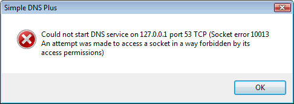
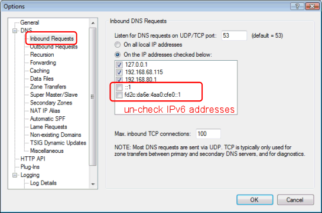
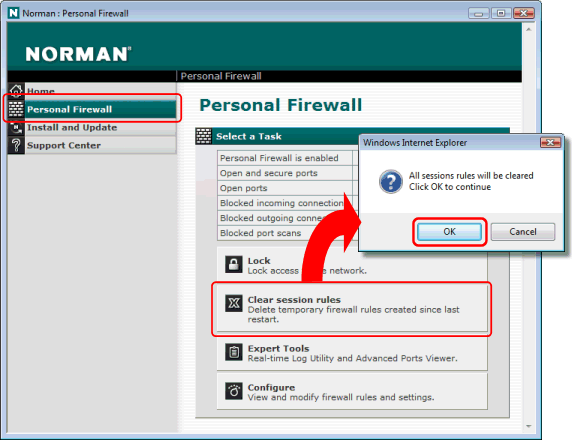
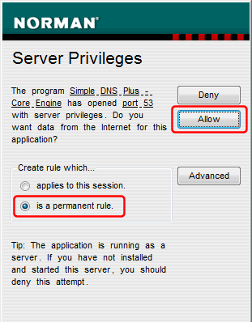

Norman Personal Firewall is a product from Norman ASA - http://www.norman.com
The first time you run Simple DNS Plus on on a computer with Norman Personal Firewall, you will probably get an error message like this:

The version of Norman Personal Firewall we tested (7.0.0.1) did not support IPv6 and blocks all IPv6 ports.
So if your computer has IPv6 enabled (default in Windows Vista / Server 2008), you first need to stop Simple DNS Plus from listening on all local IPv6 addresses including ::1 (localhost).
In the Simple DNS Plus Options dialog / DNS / Inbound Requests section, select "On the IP addresses checked below" and un-check IPv6 addresses:

Next, Norman Personal Firewall may have created a temporary firewall rule blocking Simple DNS Plus during Windows startup, so open the Norman Security Suite user interface, select "Personal Firewall", click "Clear session rules", and confirm by clicking the OK button:

Now restart Simple DNS Plus, and you should get the following dialog.
Select "is a permanent rule" and click the "Allow" button:

Simple DNS Plus should now be able to communicate freely over the Internet.